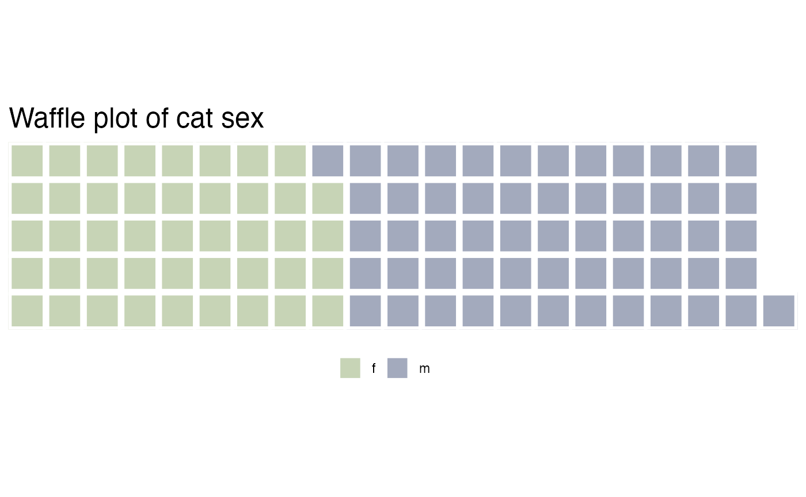

Example analysis
Example-analysis.Rmd
library(waffle)
#> Loading required package: ggplot2
library(tidytuesdayR)
library(dplyr)
#>
#> Attaching package: 'dplyr'
#> The following objects are masked from 'package:stats':
#>
#> filter, lag
#> The following objects are masked from 'package:base':
#>
#> intersect, setdiff, setequal, union
library(lubridate)
#>
#> Attaching package: 'lubridate'
#> The following objects are masked from 'package:base':
#>
#> date, intersect, setdiff, union
library(ggplot2)
library(tidyr)
library(extrafont)
#> Registering fonts with RData Source
The data comes from the Movebank for Animal Tracking Data via Data is Plural. The initial intent of the dataset is to impact of domestic cats on native prey. The data contains information about over one hundred (specifically 101) volunteers’ cat information on age, sex, neuter status, hunting habits, and time-stamped GPS pings.
Link to data source: McDonald JL, Cole H (2020) Data from: The small home ranges and large local ecological impacts of pet cats [United Kingdom]. Movebank Data Repository. doi:10.5441/001/1.pf315732
Link to the data dictionary: https://github.com/rfordatascience/tidytuesday/blob/master/data/2023/2023-01-31/readme.md
Load data into R
The following code chunk can read in the data from
tidytuesdayR. We will save the file locally, so this chunk
will only run once if you first clone the directory
tuesdata <- tidytuesdayR::tt_load('2023-01-31')
tuesdata <- tidytuesdayR::tt_load(2023, week = 5)
cats_uk <- tuesdata$cats_uk
cats_uk_reference <- tuesdata$cats_uk_referenceThe data is saved under the data folder
# function to test if the directory exists, and create one if not
data_dir <- function(folder) {
if(!file.exists(paste(here::here(), folder, sep="/"))) {
dir.create(paste(here::here(), folder, sep="/"))
}
}
data_dir("data")
# save the data only once
# write.csv(cats_uk_reference,
# file=paste(here::here(), 'data/cats_uk_reference.csv', sep="/"),
# row.names = FALSE)
# load the data locally
df <- read.csv(paste(here::here(), 'data/cats_uk_reference.csv', sep="/"))Data Wrangling and Visualization
First of all, let’s take a look at the basic information of the dataset
df %>%
group_by(animal_sex) %>%
summarise(count = n())
#> # A tibble: 2 × 2
#> animal_sex count
#> <chr> <int>
#> 1 f 44
#> 2 m 57There are 44 female cats and 57 male cats
Below is a demonstration of our waffle package. We can
visualize the counts of female and male in square pie charts, which is
able to show the proportion of data more directly
df %>%
group_by(animal_sex) %>%
summarise(count = n()) %>%
waffle(rows = 5, legend_pos = "bottom", colors = c("#c7d4b6", "#a3aabd"))
df %>%
filter(!is.na(animal_reproductive_condition))%>%
group_by(animal_sex, animal_reproductive_condition) %>%
summarise(count = n()) %>%
pivot_wider(names_from = "animal_reproductive_condition",
values_from = "count")
#> `summarise()` has grouped output by 'animal_sex'. You can override using the
#> `.groups` argument.
#> # A tibble: 2 × 4
#> # Groups: animal_sex [2]
#> animal_sex `Not fixed` Spayed Neutered
#> <chr> <int> <int> <int>
#> 1 f 1 41 NA
#> 2 m 1 NA 55Obviously female cats are spayed and male cats are neutered. Only two cats are not fixed
All cats are domestic cats (Felis catus). All are from the UK.
There are three missing values for the reproductive conditions, among 101 cats, so I will remove it first for cleaness of the example analysis.
df %>%
select(tag_id, prey_p_month, hrs_indoors, hunt, n_cats,
animal_reproductive_condition, food_dry,
animal_sex, age_years) %>%
slice_max(prey_p_month, n = 5)
#> tag_id prey_p_month hrs_indoors hunt n_cats
#> 1 Jago 17.5 7.5 TRUE 4
#> 2 Sid-Tag 17.5 7.5 TRUE 1
#> 3 Maxwell-Tag 17.5 7.5 TRUE 1
#> 4 Carrots-Tag 17.5 7.5 TRUE 4
#> 5 Spot-Tag 17.5 7.5 TRUE 4
#> 6 Macaulay Mccat-Tag 17.5 2.5 TRUE 2
#> 7 Ginge-Tag 17.5 2.5 TRUE 2
#> animal_reproductive_condition food_dry animal_sex age_years
#> 1 Neutered TRUE m 2
#> 2 Spayed TRUE f 4
#> 3 Neutered TRUE m 6
#> 4 Neutered TRUE m 3
#> 5 Neutered TRUE m 2
#> 6 Spayed TRUE f 6
#> 7 Neutered TRUE m 3The highest per month is 17.5, all of them spend 7.5 hours in door; they are allowed to hunt, the number of cats in the household varies; all of them are neutered or spayed; all of them have dry food; Sex varies; age is in the lower to middle range.
Here we can put in another two functions in waffle
waffle package can also work with ggplot
df %>%
count(food_dry) %>%
ggplot(aes(fill = food_dry, values = n)) +
geom_waffle(n_rows = 8, size = 0.33, colour = "white") +
scale_fill_manual(name = NULL,
values = c("#BA182A", "#FFEDA0"),
labels = c("Not Dry", "Dry")) +
coord_equal() +
theme_void() + ggtitle("Waffle plot of dry food count",
subtitle = "each square represents one cat")
Proportion of dry and not dry food
It can also combine plots
p1 <- df %>%
group_by(food_dry) %>%
summarise(count = n()) %>%
waffle(rows = 5, colors = c("#BA182A", "#FFEDA0"), title ="Waffle plot of dry food count")
p2 <- df %>%
group_by(food_wet) %>%
summarise(count = n()) %>%
waffle(rows = 5, colors = c("#BA182A", "#FFEDA0"), title="Waffle plot of wet food count")
iron(p1, p2)Proportion of food consumption pattern
Back to the analysis, first of all, whether or not they are allowed to hunt, hours indoor, reproductive conditions seem to be related to the top predators. So let’s look at these first.
df %>% filter(!is.na(hunt)) %>%
group_by(hunt) %>%
summarise(prey_p_month = mean(prey_p_month, na.rm = TRUE),
hrs_indoors = mean(hrs_indoors, na.rm = TRUE))
#> # A tibble: 2 × 3
#> hunt prey_p_month hrs_indoors
#> <lgl> <dbl> <dbl>
#> 1 FALSE 0 14.8
#> 2 TRUE 4.67 11.2Hunters have more prey counts, higher outdoor hour on average
df %>% filter(!is.na(animal_reproductive_condition)) %>%
group_by(animal_reproductive_condition) %>%
summarise(prey_p_month = mean(prey_p_month, na.rm = TRUE),
hrs_indoors = mean(hrs_indoors, na.rm = TRUE))
#> # A tibble: 3 × 3
#> animal_reproductive_condition prey_p_month hrs_indoors
#> <chr> <dbl> <dbl>
#> 1 Neutered 3.7 11.3
#> 2 Not fixed 1.75 7.5
#> 3 Spayed 3.84 12.9Spayed and Neutered cats have longer hours indoors on average, and higher prey per month on average as well.
df %>% filter(!is.na(food_dry)) %>%
group_by(food_dry) %>%
summarise(prey_p_month = mean(prey_p_month, na.rm = TRUE),
hrs_indoors = mean(hrs_indoors, na.rm = TRUE),
n_cats = mean(n_cats, na.rm = TRUE))
#> # A tibble: 2 × 4
#> food_dry prey_p_month hrs_indoors n_cats
#> <lgl> <dbl> <dbl> <dbl>
#> 1 FALSE 5.25 13.8 2
#> 2 TRUE 3.68 11.8 2.08Next we look at a few numerical variables
ggplot(df[!is.na(df$age_years),], aes(x=age_years, y=prey_p_month, color = animal_sex)) +
geom_point() +
ggtitle("Scatter plot of domestic cats prey per month versus age", subtitle = "Colored by sex") +
xlab("Age by year") + ylab("Prey per month")
Comparison between prey counts and age
Age do not show significant relationship with prey counts
ggplot(data=df, aes(x=factor(hrs_indoors, levels = sort(unique(hrs_indoors))), y=prey_p_month, fill = as.factor(hrs_indoors))) +
geom_boxplot() +
ggtitle("Boxplot of domestic cats prey per month versus hours indoor", subtitle = "Colored by hours in door") +
xlab("Hours indoor") + ylab("Prey per month") + theme(legend.position="none")Comparison between prey counts and hours indoor
Higher hours in door is associated with lower prey counts, and lower hours in door is associated with higher prey counts
df %>%
mutate(strap_time = as.numeric(ymd_hms(df$deploy_off_date) - ymd_hms(df$deploy_on_date)) / 24) %>%
ggplot(aes(x=strap_time, y=prey_p_month, color = animal_sex)) +
geom_point() +
ggtitle("Scatter plot of domestic cats prey per month versus GPS strap time", subtitle = "Colored by sex") +
xlab("Strap Time") + ylab("Prey per month")Comparison between prey counts and GPS strap time
The time the cats having GPS strapped on does not show strong relationship with prey counts.
ggplot(df, aes(x=prey_p_month)) + geom_histogram() +
facet_grid(cols = vars(food_dry))
#> `stat_bin()` using `bins = 30`. Pick better value with `binwidth`.Comparison between prey counts and food type
ggtitle("Histogram of domestic cats prey per month", subtitle = "grouped by food type")
#> $title
#> [1] "Histogram of domestic cats prey per month"
#>
#> $subtitle
#> [1] "grouped by food type"
#>
#> attr(,"class")
#> [1] "labels"Although cats eating dry food do show higher prey counts, but the counts are too imbalanced to make a conclusion
Summary
whether or not they are allowed to hunt, hours indoor, and reproductive conditions affect the prey per month of domestic cats
Functions used
| Package | Function |
|---|---|
dplyr |
select(), mutate(),
filter(), slice_max(),
summarise(), group_by()
|
tidyr |
pivot_wider() |
lubridate |
ymd_hms() |
ggplot2 |
geom_point(),
geom_boxplot(), geom_histogram()
|
waffle |
waffle(), iron(),
geom_waffle()
|